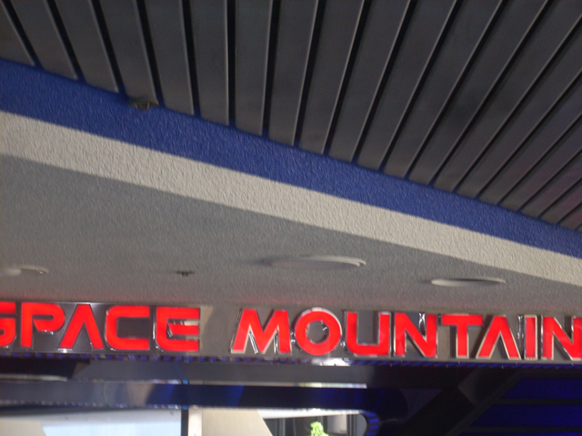
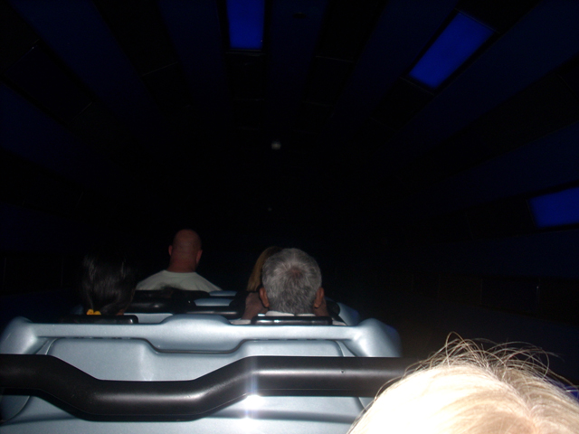
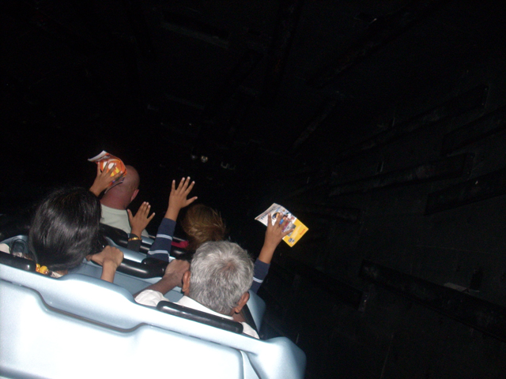
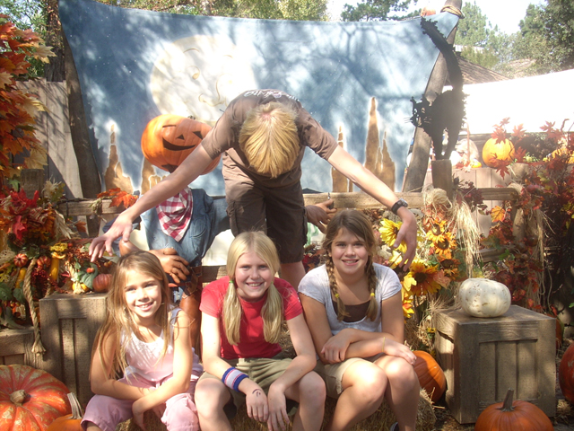
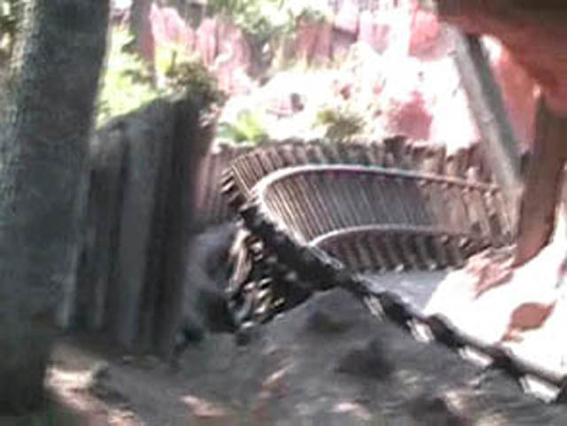
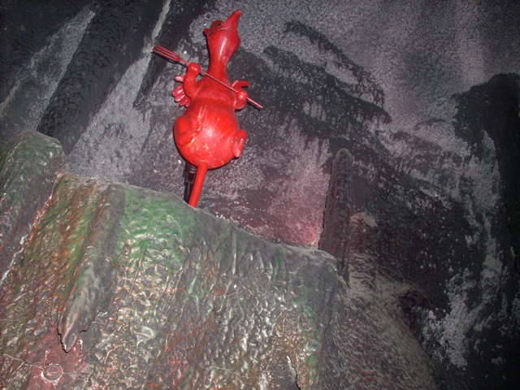
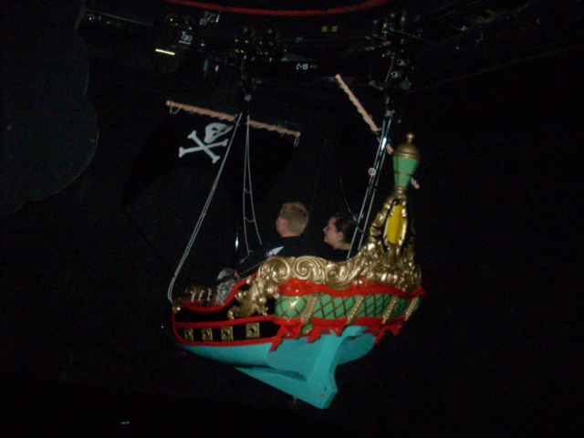

Fall 2007 Photos
Knotts Berry FarmDisneyland Resort
And now it's off to Disneyland for more ashfilled rides.
Here is some of the Halloween Time Scenery. And no suprise here, the pumpkin blocks out the castle.

Wow, The ash will have no effect of my ride.

Ohh. Pretty Blue Lights.

Welcome to Alaska.
Wow, Only someone as stupid as me would waste 15 min of their life in a crowded submarine.
 In 2 weeks, this will be Shiekra.
In 2 weeks, this will be Shiekra.

I AM GOD!!!!! I HAVE THE BRAINS OF JESUS AND THE STRENGTH OF CHUCK NORRIS!!!! NOW FEED ME BREAD AND WINE OR ELSE!!!!!!

Here is more speacial Cool People Only Track on Thunder Mtn.
 Damn!!! If only I brought my slingshot.
Damn!!! If only I brought my slingshot.
Yes, I'd like two beers, thank you very much.

This isn't part of Mr. Toads Wild Ride, I'm just drunk.
This is as close as I'll be to Thorpe Park for a while.

Like on Tatsu, I feel like I'm flyinig!!!!!!!"
These mermaids wouldn't go topless for us if we promised them everlasting happiness.
THIS... IS... HALLOWEEN!!!!!!!!!!!"
Do we look hot in these napkin crowns?
GRRR! WHY DOESN"T MULLHOLLAND MADNESS HAVE THAT EXTRA HUMP!!!!!?
 Hey, At least these turns are flat. If you are reading this PGA, Flat turns are good!!!!
Hey, At least these turns are flat. If you are reading this PGA, Flat turns are good!!!!
 A ride on Mullholland Madness was enjoyed by all.
A ride on Mullholland Madness was enjoyed by all.
AND HERE IS AN EXCLUSIVE CONSTRUCTION PHOTO OF CALIFORNIA ADVENTURES MAKEOVER!!!!!!!!!
Sigh, What is the point of this ride?
 And now its time to ride CA Screamin 500 times.
And now its time to ride CA Screamin 500 times.
 CA Screamin had the worst operations ever today. They were even stacking a car!!!!
CA Screamin had the worst operations ever today. They were even stacking a car!!!!
 CA Screamin has been running great lately.
CA Screamin has been running great lately.
Heres an update on Toy Story Mania.
And theres no better way to end an update then doing your "I'm riding Mean Streak." Impression.
Home